Articoli per imparare l'italiano
Grammatica, cultura, modi di dire e consigli pratici: centinaia di articoli per accompagnarti nel tuo percorso, prima o dopo ogni lezione.
De congiuntivo uitgelegd voor Nederlanders
Niet beginnen bij de vervoegingstabel maar bij de vraag wat de spreker ermee doet. Dan valt het kwartje sneller.
19 oktober 2026
Valse vrienden: Italiaanse woorden die niet betekenen wat je denkt
Camera is geen camera, parenti zijn niet je ouders, en sono pieno betekent niet dat je genoeg gegeten hebt.
12 oktober 2026
Italiaans leren voor je Italiaanse schoonfamilie
De zondagse lunch bij de schoonfamilie is geen taaltoets, maar het voelt wel zo. Wat je echt nodig hebt.
5 oktober 2026
Italiaans voor je huis in Italië: de woorden die je bij de notaris en de aannemer nodig hebt
Geometra, rogito, visura, preventivo, IMU. De woorden waar je niet omheen kunt als je een huis in Italië hebt, en die in geen enkele cursus voorkomen.
28 september 2026
Duolingo of een echte docent? Wat werkt wanneer
Duolingo is beter dan zijn reputatie onder docenten, en slechter dan zijn reputatie onder gebruikers. Het punt is waar het stopt.
21 september 2026
Online Italiaanse les of op locatie? Wat het echt uitmaakt
Didactisch scheelt het weinig. Op discipline, kinderen en spontaan contact scheelt het wel.
14 september 2026
Privéles of groepsles Italiaans? Een eerlijke vergelijking
In een groep van acht spreek je zeven minuten per uur. Maar dat is niet het hele verhaal — soms is de groep gewoon beter.
7 september 2026
Italiaans leren in Ede, Wageningen en omgeving: alle opties
Buiten de Randstad is het aanbod voor Italiaans dun. Een overzicht van wat er wél is in de regio Ede, en hoe je kiest.
31 augustus 2026
Welk Italiaans niveau heb ik? A1 tot C2 uitgelegd
A1, A2, B1, B2, C1, C2 — wat betekenen die letters concreet, en waar zit jij?
24 augustus 2026
Hoeveel tijd kost het om Italiaans te leren?
Van A1 tot B2 in uren, vertaald naar een realistische kalender. Plus de vier factoren die het verschil maken.
17 augustus 2026
Italiaans leren na je 50e: wat er verandert en wat niet
Het idee dat je na een bepaalde leeftijd geen taal meer leert, klopt niet. Wat wel klopt is dat je het anders moet aanpakken.
10 augustus 2026
Italiaanse uitspraak voor Nederlanders: de 7 lastigste klanken
Gli, gn, de rollende r en de open e: zeven klanken die het Nederlands niet kent, en die je accent bepalen.
3 augustus 2026
10 fouten die Nederlanders maken in het Italiaans
Niet de algemene fouten die iedereen maakt, maar de tien die specifiek zijn voor wie Nederlands als moedertaal heeft.
27 juli 2026
Wat kost een Italiaanse les in Nederland?
Van vijftien euro op een online platform tot zeventig euro voor een privéles aan huis. Wat verklaart dat verschil, en wat heb jij nodig?
27 juli 2026
Italiaans B1 voor het Italiaanse staatsburgerschap: wat je moet weten
Een B1-certificaat is verplicht voor de Italiaanse nationaliteit. Maar niet elk B1 is hetzelfde — en die keuze kan later tegen je werken.
27 juli 2026
CILS, CELI of PLIDA? Zo kies je het juiste Italiaanse certificaat
CILS, CELI, PLIDA en CERT.IT lijken uitwisselbaar, maar dat zijn ze niet. Een overzicht van de verschillen die er echt toe doen.
27 juli 2026
Cosa mangeremo nel 2025?
🥑 How food habits in Italy are changing: plant-based, local, creative. 🎯 Obiettivi didattici Comprendere un testo informativo su cibo e abitudini.…
25 maggio 2025
Cosa è Ferragosto?
La festa di Ferragosto ha radici nell'Antica Roma, celebra l'Assunzione di Maria ed è oggi sinonimo di vacanze. Ferragosto è una delle festività più…
13 maggio 2025
Vivere meglio nel 2025
💡 How Italians are redefining lifestyle with simplicity, health and awareness. 🎯 Obiettivi didattici Comprendere un testo su nuove tendenze della…
3 aprile 2025I Gesti Famosi degli Italiani
Discover why Italians use gestures when they speak and how these gestures enrich their communication. This article is perfect for those who want to…
23 marzo 2025
Sindaci piccoli, idee grandi
🗳️ Mayors of small towns bring big change with local actions and vision. 🎯 Obiettivi didattici Comprendere un testo narrativo e informativo sul…
4 marzo 2025Essere al verde
Cosa significa "essere al verde"? Quando si è "al verde" significa trovarsi in una situazione finanziaria estremamente precaria, senza avere nemmeno…
28 febbraio 2025
Quando l’accoglienza salva i paesi
🏘️ In southern Italy, migrants help revive villages at risk of depopulation. 🎯 Obiettivi didattici Riflettere sul ruolo sociale dell’immigrazione e…
3 febbraio 2025Roma: Magia e Storia tra i Sette Colli
Roma, la Città Eterna, con la sua storia, arte e natura, offre un'esperienza indimenticabile e unica. Roma, la Città Eterna, è un luogo unico che…
16 gennaio 2025Il Granchio Blu
Discover the threat of the invasive blue crab in Italy. Learn about its origins, impact on the ecosystem, and measures taken to combat this…
9 gennaio 2025
Vivere bene in pensione: le migliori città italiane
🇮🇹 Where to retire in Italy: lifestyle, costs and well-being in different cities. 🎯 Obiettivi didattici Comprendere un testo descrittivo e…
25 novembre 2024
Subiaco, Capitale del Libro 2025
📘 The town of Subiaco has been named Italy's Book Capital 2025: a symbol of culture and memory. 🎯 Obiettivi didattici Comprendere un testo…
25 ottobre 2024
Italia e Paesi Bassi: arte, cultura e dialogo oltre i confini
🌐 Italy and the Netherlands promote culture through shared projects and artistic exchange. 🎯 Obiettivi didattici Comprendere testi informativi su…
7 ottobre 2024
Le 100 torri di Bologna
Bologna, "la turrita", è famosa per le sue torri medievali e la sua ricca storia architettonica. Bologna è famosa per le sue torri medievali, tanto…
20 agosto 2024
L'Evoluzione dell'Estate Italiana
L'estate italiana è cambiata con vacanze più corte, destinazioni varie e evoluzione socio-economica. L'estate italiana, un tempo caratterizzata da…
6 agosto 2024
Langue e Parole, De Saussure
Ferdinand de Saussure's linguistic distinction between "langue" and "parole" crucial for effective Italian language teaching. 🇬🇧 Nel campo della…
18 luglio 2024Vuotare il sacco
La frase "vuotare il sacco" significa esprimere completamente i pensieri o sentimenti senza trattenersi. La frase "vuotare il sacco" ha un…
4 luglio 2024
Visitare Venezia nel 2024
Discover the enchanting city of Venice! Learn about the new visitor ticket system effective in 2024, and explore top attractions like gondola rides,…
2 luglio 2024Il Carnevale di Venezia
Welcome to a fascinating journey through the history of the Venice Carnival, an event that not only enchants with its visual splendor but also…
25 giugno 2024Mai una gioia
“Mai una gioia” è una frase molto popolare sul web e nella nostra vita quotidiana, specialmente nel 2020. Ma perché si dice così? Cosa significa…
20 giugno 2024
Il Collio per GO!2025: quando la cultura unisce i confini
🌍 Collio’s cultural projects bring new life to the Italy-Slovenia border for GO!2025. 🎯 Obiettivi didattici Comprendere un testo su eventi culturali…
18 giugno 2024Bella ciao
Explore the enduring legacy of 'Bella Ciao,' Italy's iconic anthem of resistance. Learn about its mysterious origins, evolution, and global…
18 giugno 2024
Aperitivo a Roma, Milano e Napoli
Discover the vibrant tradition of aperitivo in Italy, exploring the unique happy hour experiences in Rome, Milan, and Naples. Learn about this…
11 giugno 2024Essere a cavallo
"Essere a cavallo" è un modo di dire italiano che viene utilizzato per indicare che ci si trova in una situazione sicura e confortevole, superando…
6 giugno 2024
La Gestualità Italiana: Un Linguaggio Senza Parole?
La lingua italiana include i gesti come forma di comunicazione con significati e origini diverse. La lingua italiana non è fatta soltanto di parole…
4 giugno 2024
Il Clima Italiano: Sole, Mare e Montagne
Italy has various climates: alpine, continental, Mediterranean, temperate. Summer is hot, winter is cold. Se stai pianificando un viaggio in Italia o…
28 maggio 2024Il gioco non vale la candela
Cosa significa “il gioco non vale la candela”? Significa che un’attività o una situazione non giustifica lo sforzo richiesto. Questa espressione si…
25 maggio 2024
Le funzioni del linguaggio
Human language is complex, serving varied functions: referential, emotive, conative, phatic, metalinguistic, and poetic. 🇬🇧 Il linguaggio umano è una…
23 maggio 2024Il Rinascimento Italiano
The Italian Renaissance transformed art, culture, and science, shaping the modern world. Benvenuti a una panoramica accattivante sul Rinascimento…
21 maggio 2024La festa della mamma
Explore the history and traditions behind Mother's Day, from its ancient origins honoring fertility goddesses to modern celebrations worldwide.…
14 maggio 2024
Arrampicarsi sugli specchi
Cosa significa “arrampicarsi sugli specchi”? Significa cercare di trovare una scusa o una giustificazione che non regge. Guarda su YouTube ↗ Questa…
11 maggio 2024Rita Levi Montalcini
Discover the extraordinary life of Rita Levi Montalcini, the only Italian woman to win a scientific Nobel Prize. Read her story of determination and…
7 maggio 2024Learn the Italian Basics: A Beginner's Guide
Are you intrigued by the melodic language of Italian? Dive into the essentials of Italian language learning with our comprehensive guide. Why Learn…
5 maggio 2024Chiudere un occhio
Cosa significa "chiudere un occhio"? Significa ignorare qualcosa di negativo per convenienza o favore. Guarda su YouTube ↗ Questo modo di dire si usa…
2 maggio 2024
Mamma mia!
Discover the origin and meaning behind the iconic Italian expression "Mamma Mia"! Explore why Italians use this phrase and its deep cultural…
30 aprile 2024
Cosa bolle in pentola?
Cosa significa “cosa bolle in pentola”? Significa voler sapere cosa sta succedendo o se ci sono novità. Questa espressione trae origine dalla cucina…
27 aprile 2024Sanremo: Il festival della canzone italiana
Experience the magic of the Italian Song Festival in Sanremo. Discover talented artists competing for the prestigious Leone di Sanremo. Vivi la magia…
26 aprile 2024Il carnevale di Ivrea
Experience the vibrant Carnival of Ivrea in Piedmont, where neighborhoods compete in a spectacular "Battle of the Oranges." Clad in the traditional…
23 aprile 2024Staying Motivated
Discover the secrets to staying motivated in language learning with expert insights and practical tips. Learn how personalized goals, consistent…
21 aprile 2024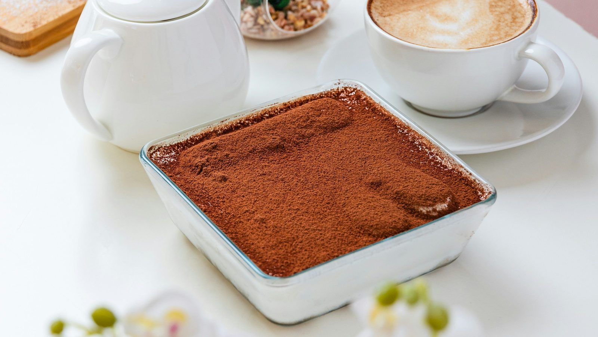
Scopri l'origine del Tiramisù
Discover the fascinating history of Tiramisu, the iconic Italian dessert from Treviso. Learn about its origins, original recipe, and delightful…
19 aprile 2024
Le Teorie di Stephen D. Krashen
Stephen D. Krashen's language acquisition theories emphasize input, affect, and brain utilization in language learning. 🇬🇧 L'insegnamento delle…
18 aprile 2024L'industria cinematografica italiana
Learn about the challenges facing the Italian film industry and the call for reforms to ensure its survival. Stay informed and support the future of…
16 aprile 2024
10 Tips for Learning Italian
Unlock the secrets to mastering Italian with our Top 10 Tips for Learning Italian. From immersive experiences to effective study strategies, discover…
14 aprile 2024
Perché il cibo italiano è tanto amato?
Discover the secrets of Italian cuisine and why it's loved worldwide. Explore regional traditions, ingredient quality, and the art of conviviality at…
12 aprile 2024
Sviluppo della Sensibilità Interculturale di Bennett
The article explores Bennett's six stages of intercultural sensitivity and provides practical strategies for teachers' implementation. 🇬🇧…
11 aprile 2024
Italian motor week
Explore the exciting world of Italian motors during Italian Motor Week24, featuring events showcasing automotive heritage, from Vespa World Days to…
9 aprile 2024Tizio, Caio e Sempronio
Cosa significa “Tizio, Caio e Sempronio”? Significa riferirsi a tre persone generiche. Questa espressione si usa in italiano per indicare tre…
6 aprile 2024Il matrimonio italiano
Explore the rich traditions of Italian weddings. Discover customs, attire, and festivities that make Italian weddings unique. Esplora le ricche…
5 aprile 2024Essere in alto mare
"Essere in alto mare" è come trovarsi in una barca senza remi, senza bussola e senza sapere dove si stia andando. È una situazione in cui ci si sente…
4 aprile 2024Viganella: il paese senza sole
Discover the village of Viganella in Piedmont, where the sun disappears for months during winter. A large mirror mounted on the mountain reflects…
2 aprile 2024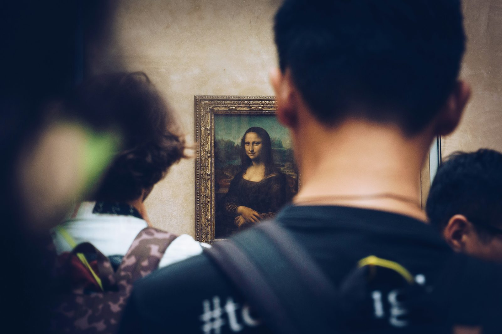
Arte italiana: La Gioconda
Explore the timeless masterpiece of Leonardo da Vinci, La Gioconda (or Mona Lisa), and unravel the mysteries behind this iconic painting. Discover…
29 marzo 2024Università di Bologna: la più antica d'Europa
Explore the rich history of the University of Bologna, Europe's oldest university founded in 1088. Discover its origins, evolution, and renowned…
26 marzo 2024
Arte, giovani e intercultura per un’Italia futura
🌍 A cultural event connects new generations, migration and creativity through art. 🎯 Obiettivi didattici Comprendere un testo informativo su eventi…
25 marzo 2024Avoiding Common Mistakes
Embarking on the journey of learning Italian can be an enriching experience, but it comes with its share of challenges. Understanding and avoiding…
24 marzo 2024Fare i conti senza l’oste
Cosa significa “fare i conti senza l’oste”? Significa trarre conclusioni affrettate senza considerare tutti i fatti o le persone coinvolte. Questa…
23 marzo 2024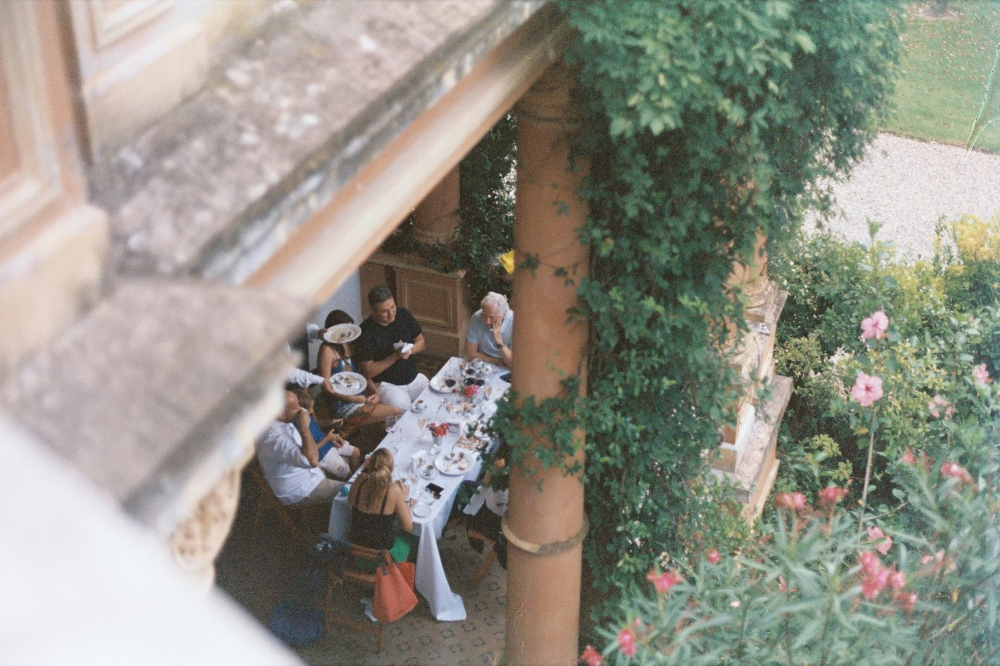
La nuova famiglia italiana
Discover the evolution of the Italian family over the past 30 years! From tradition to modernity, explore the changes in family dynamics, work-life…
22 marzo 2024
Chiodo scaccia chiodo
Cosa significa “chiodo scaccia chiodo”? Significa superare un problema o una delusione sostituendolo con qualcosa di nuovo e positivo. Questo modo di…
21 marzo 2024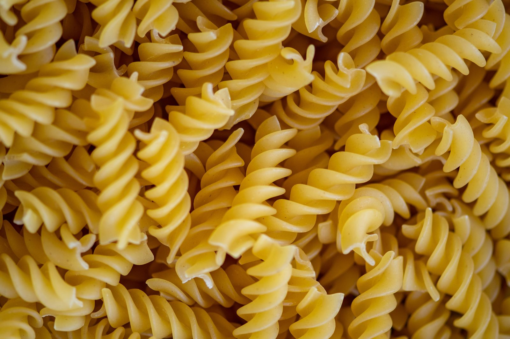
La pasta italiana
Discover the rich variety of Italian pasta types and their regional traditions. From classic spaghetti to unique shapes like orecchiette and…
19 marzo 2024
Mangia, Prega, Ama: tra Italia, India e Indonesia
Discover the enchanting world of "Eat Pray Love" filming locations with Julia Roberts. Explore Italy, India, and Indonesia through the eyes of…
15 marzo 2024
La grammatica universale di Chomsky
Noam Chomsky's theory posits shared innate grammatical principles across languages. 🇬🇧 La grammatica universale è una teoria linguistica proposta da…
14 marzo 2024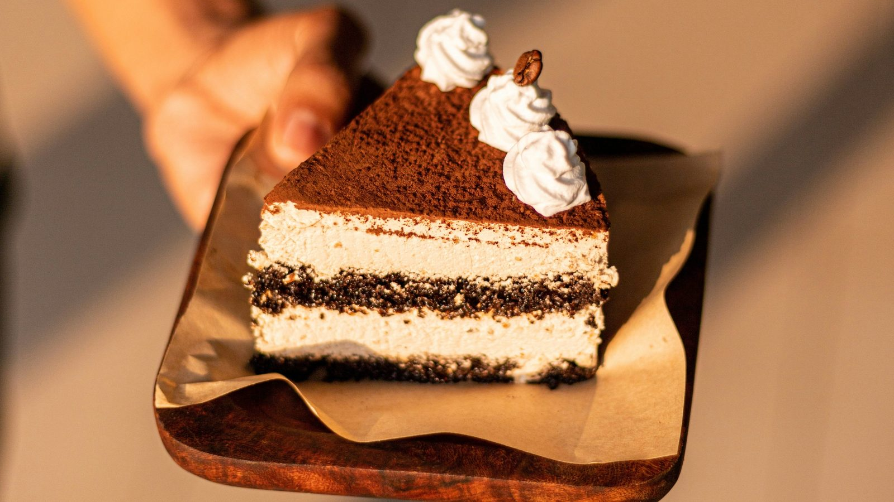
Tiramisù World Cup
Indulge in the world's best tiramisù at the Tiramisù World Cup! Join an unique competition celebrating the finest homemade tiramisù recipes from…
12 marzo 2024
I passatempi degli italiani
Discover popular Italian pastimes and leisure activities. From gardening and DIY to sports and cultural pursuits, explore how Italians spend their…
8 marzo 2024Saltare nel buio
Se hai sentito parlare di "fare un salto nel buio" ma non sai bene cosa voglia dire, tranquillo! Qui ti spiegheremo tutto. Questo modo di dire si usa…
7 marzo 2024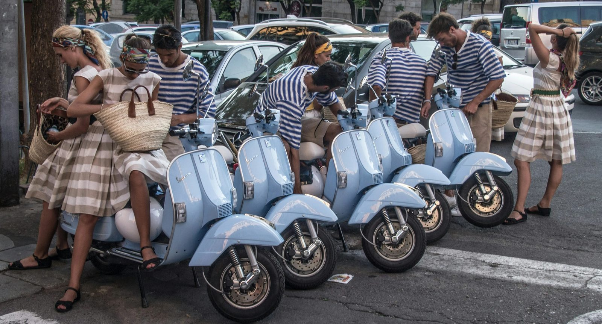
La Dolce Vita
Explore the charm of Italian "Dolce Vita" through Fellini's iconic film. Be inspired by the luxury and fun of the 1950s. Scopri il fascino della…
5 marzo 2024
La moda italiana: un viaggio nell'eleganza
Explore the rich history and unique styles of Italian fashion. Discover iconic designers and the evolution of Italian fashion from the 20th century…
1 marzo 2024Il sistema politico italiano
Learn about the separation of powers, legislative, executive, and judicial branches, and the role of the President. Explore Italy's constitutional…
27 febbraio 2024
A tavola in Italia: cosa si fa (e cosa no)
🇮🇹 Table manners in Italy: 10 strange habits and what they say about culture. 🎯 Obiettivi didattici Leggere e comprendere un testo umoristico e…
25 febbraio 2024
Pagare alla romana
Cosa significa “pagare alla romana”? Significa dividere equamente il conto tra tutti i partecipanti. Guarda su YouTube ↗ Questo modo di dire si usa…
24 febbraio 2024Il patrimonio culturale dell'Italia
Discover Italy's rich cultural and natural heritage recognized by UNESCO. Explore 58 world heritage sites, from the stunning Amalfi Coast to the…
23 febbraio 2024
La Varietà Linguistica
The Italian language's rich history dates back to Latin, evolving into diverse varieties. 🇬🇧 La lingua italiana ha una storia affascinante che risale…
22 febbraio 2024
Quanto è importante il calcio italiano?
Explore the impact of Italian football on the economy and recent changes in sports policy. Learn about the Serie A clubs and the financial…
20 febbraio 2024Dove vanno gli italiani in vacanza?
Explore Italian holiday trends: seaside escapes reign supreme, with Tuscany as the top destination. Dive into the Istat report on Italian travel…
16 febbraio 2024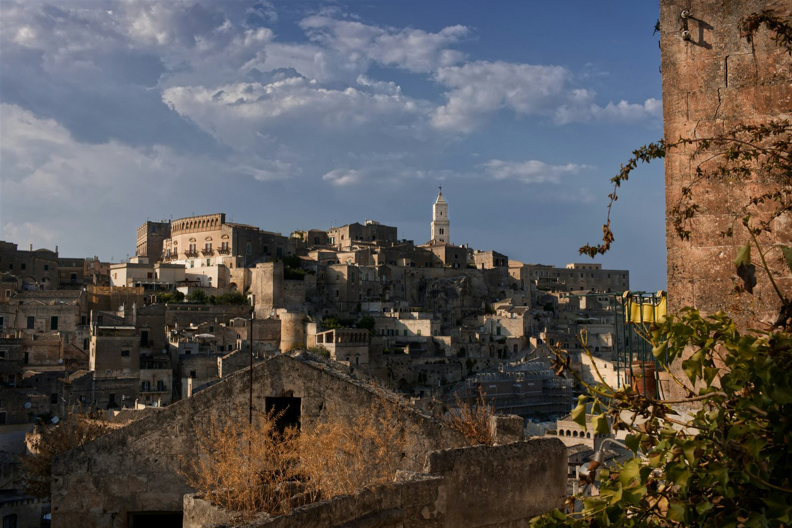
La Capitale della Cultura
Explore the charm of Italy's Culture Capital and its meaning. Dive into a year-long celebration of art, heritage, and creativity. Esplora il fascino…
13 febbraio 2024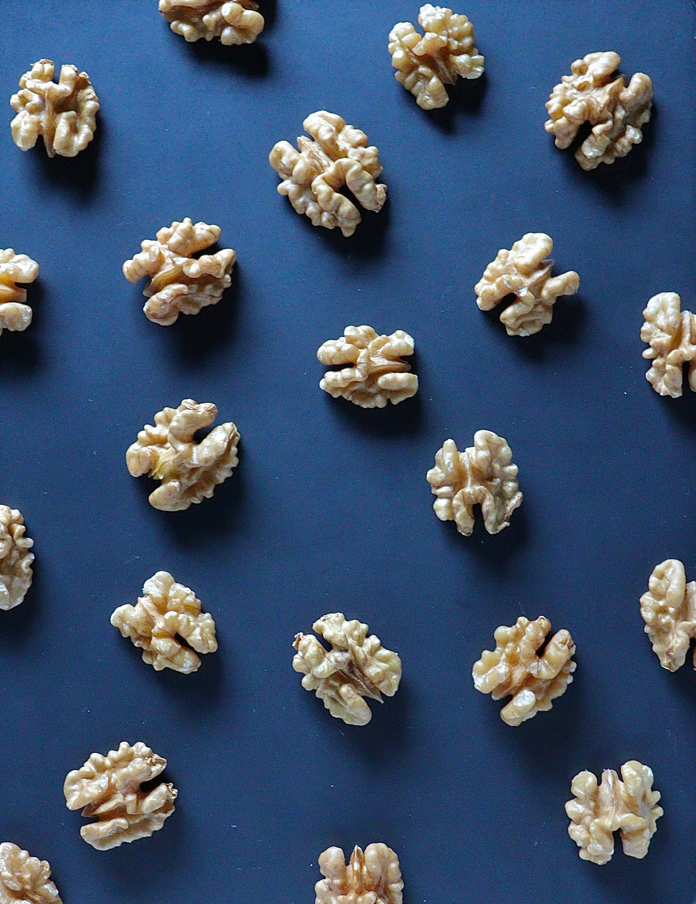
Gestalt Language Learning Theory
In the colorful tapestry of human communication, language serves as the thread that weaves together cultures, ideas, and experiences. Learning a new…
11 febbraio 2024Learn Italian Strategies for Busy Professionals
thuisitaliaans offers flexible, task-based Italian courses tailored for busy professionals' schedules. In today's fast-paced world, finding…
10 febbraio 2024Il boom dell'italiano: la quarta lingua più studiata al mondo!
Discover how Italian surpassed French to become the world's fourth most studied language! Explore language trends and Italian culture in this article…
9 febbraio 2024
Moda sostenibile italiana
Explore sustainable Italian fashion - luxury meets eco-consciousness. Discover innovative fabrics and ethical practices from top Italian brands.…
6 febbraio 2024How Long Does It Take to Learn Italian?
Learning Italian, like any new language, requires dedication, practice, and the right resources. Whether you're drawn to Italian for its rich…
4 febbraio 2024
Esportazioni italiane
Discover the latest insights on Italian exports in 2023. Learn about the significant growth driven by sustainability and digitalisation. Scopri le…
2 febbraio 2024
Cadere dalle Nuvole
Vivere sulle nuvole porta libertà, creatività e distacco dalla realtà. "Cadere dalle nuvole" indica sorpresa inaspettata. Vivere sulle nuvole…
1 febbraio 2024Salutarsi col bacio
Learn about the etiquette of cheek kissing and its cultural variations worldwide. Discover when and how to greet with a kiss on the cheek, respecting…
30 gennaio 2024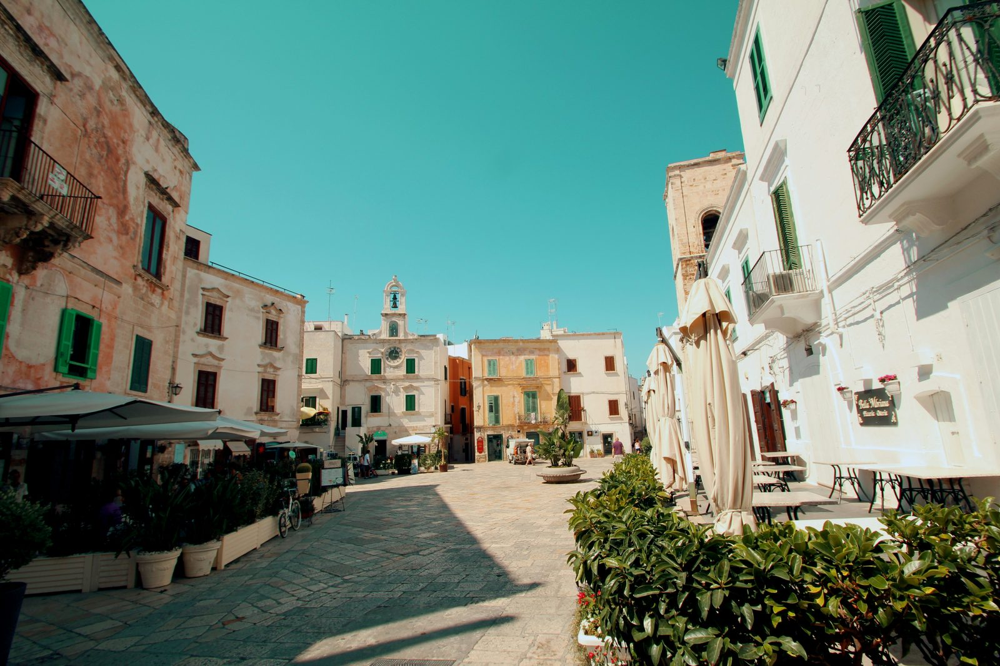
Mandare a quel paese
Cosa significa “ mandare a quel paese ”? Significa dire a qualcuno di andare via in modo brusco e spesso offensivo. Guarda su YouTube ↗ Questo modo…
27 gennaio 2024
Scrittori italiani famosi nel mondo
Discover the ranking of the most famous Italian writers in the world and explore their masterpieces. Esplora la classifica degli scrittori italiani…
26 gennaio 2024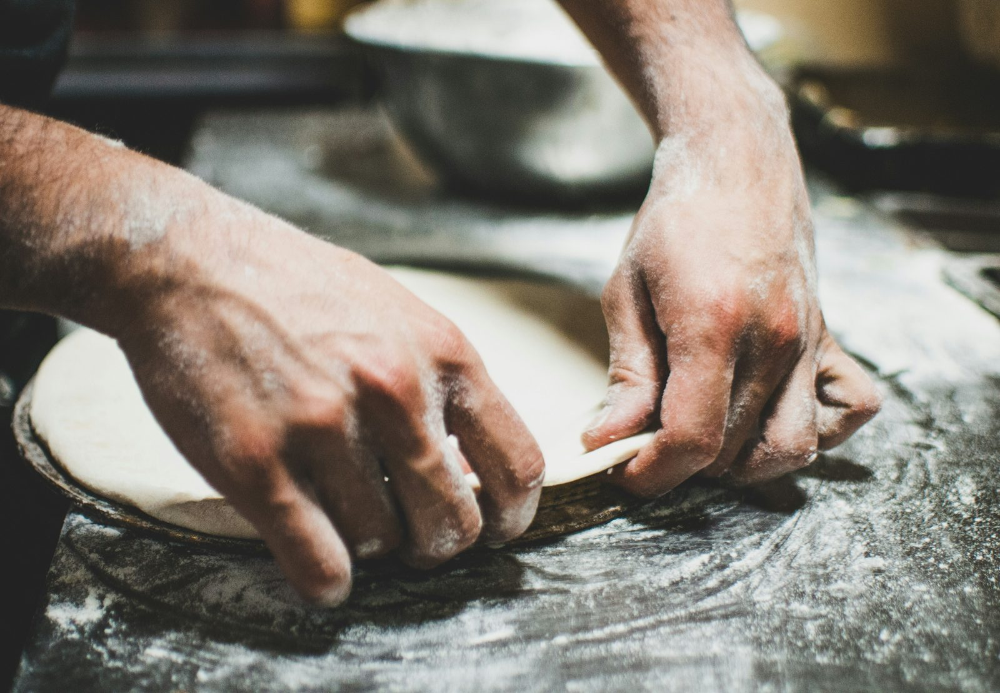
Pizza Romana & Napoletana
Discover the pizza preferences of Italians! Learn why Neapolitan and Roman pizzas are favourites, and how quality ingredients and traditional methods…
23 gennaio 2024Learning Italian Like a Spy
Learn Italian like a spy by seeking immersive opportunities, engaging with natives, and exposing yourself to authentic contexts. Imagine learning…
21 gennaio 2024
I gesti degli italiani
Discover the charm of Italian hand gestures! Learn about the rich cultural significance of Italian gestures and immerse yourself in the art of…
19 gennaio 2024
La Torre di Pisa
Discover the intriguing history of the Leaning Tower of Pisa, a renowned Italian landmark known for its unique tilt. Learn about its construction,…
16 gennaio 2024
Italian Gestures: More Than Just Words
Italy is renowned for its breathtaking landscapes, delectable cuisine, and rich cultural heritage. One distinctive element of Italian culture that…
13 gennaio 2024Il Padrino: un'impronta indelebile
Discover the iconic Godfather film series, a timeless masterpiece that delves into the complexities of mafia life and family dynamics. Explore the…
12 gennaio 2024La Moka
Discover the fascinating story of the Italian Moka, the iconic coffee maker that changed the world. Learn about its origins, innovation, and why it's…
9 gennaio 2024I brand italiani
Discover top Italian brands and industry trends. Insights on reputation and consumer favourites. Scopri i brand italiani più rinomati, le tendenze…
5 gennaio 2024Culo e Camicia
L'espressione "Culo e camicia" denota una stretta connessione basata sulla familiarità e la complicità umana. Perché si usa l'espressione "Culo e…
4 gennaio 2024
Le Dolomiti
Discover the wonders of the Dolomites! Explore breathtaking landscapes, outdoor activities, and a rich Alpine culture. Le Dolomiti, meraviglie…
2 gennaio 2024Can You Learn Italian on Duolingo?
Discover the secrets of mastering Italian with Duolingo! Explore its gamified approach, interactive exercises, and cultural insights. Uncover whether…
31 dicembre 2023Cascare dal pero
Cosa significa “cascare dal pero”? Significa prendere atto di qualcosa del quale non si aveva idea, ma che in realtà era abbastanza scontato. Questo…
30 dicembre 2023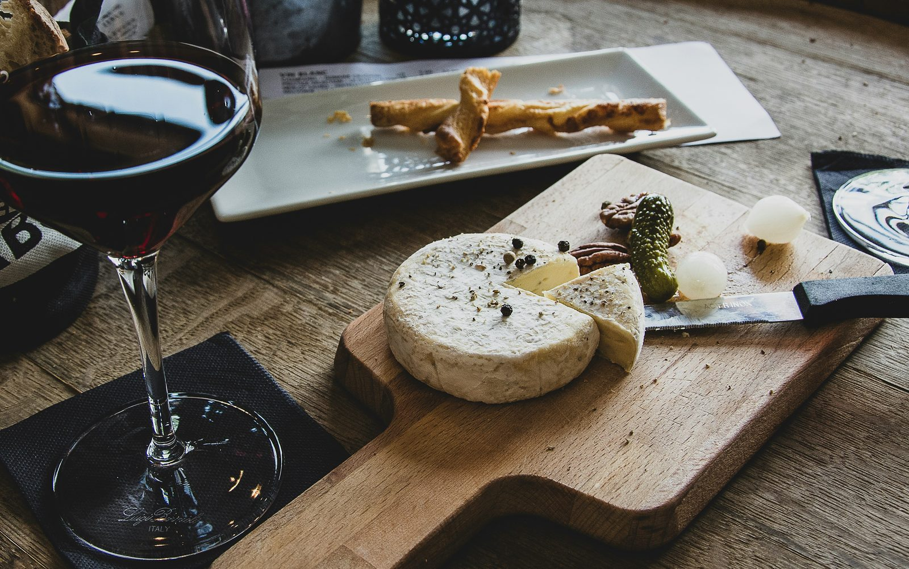
Aperitivo o Apericena?
Learn about the differences between Italian aperitivo and apericena! Discover the traditions and culinary delights of these social gatherings.…
29 dicembre 2023
Il compleanno italiano
Explore the roots of birthday traditions! From cake to candles and party favors, understand why these practices make every birthday celebration a…
26 dicembre 2023La cultura in Italia
Discover Italians' cultural trends and preferences. Explore how Italians engage with literature, cinema, museums, and more. Learn about changes over…
22 dicembre 2023Formale o informale?
Ready to dive into the world of Italian language and culture? Understanding Italian social norms, like formal vs. informal address, is key. Pronto a…
19 dicembre 2023When Did Celebrities Learn Italian?
From De Niro to Di Caprio, the influence of Italian heritage on Hollywood is profound. While some celebrities wear their Italian origins proudly,…
17 dicembre 2023Pietro torna indietro
Cosa significa “Pietro torna indietro”? Significa che qualcosa che viene prestato deve essere restituito. Questa espressione, che grazie alla rima…
16 dicembre 2023
Gli stereotipi sugli italiani
If you're curious to discover what's true behind the famous stereotypes about Italians, you're in the right place! Italy is famous for its delicious…
15 dicembre 2023I dialetti Italiani
The Italian dialects stem from Latin with distinct roles from standard Italian, influenced by regional languages. Il processo di evoluzione dei…
12 dicembre 2023
Stare con le mani in mano
Cosa significa “stare con le mani in mano”? Significa non fare nulla, essere inattivi mentre gli altri lavorano. Questo modo di dire si usa per…
7 dicembre 2023Maurizio Cattelan: tra arte e provocazione
Maurizio Cattelan, a bold artist known for controversial and influential works, challenges contemporary cultural conventions. Nato a Padova, Cattelan…
5 dicembre 2023
Navigating Italian Language Learning: From Italy vs. Abroad
Learning Italian: emersion in Italy for natural growth or structured online classes from abroad offers benefits. Learning Italian can be a thrilling…
3 dicembre 2023La Vespa
The Vespa, an Italian symbol of style and freedom, was born in the post-war period and continues to inspire today. La Vespa, simbolo italiano di…
28 novembre 2023
Bastian contrario
Cosa significa “fare il Bastian contrario”? Significa opporsi sempre, per principio, a ciò che dicono o fanno gli altri. Questa espressione si usa…
25 novembre 2023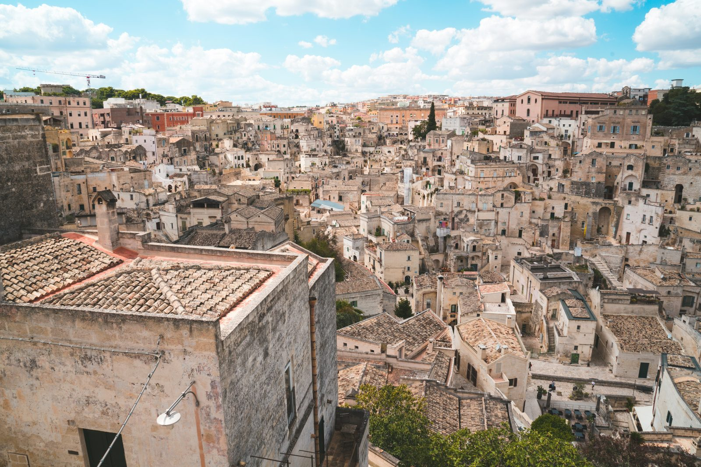
I Borghi Italiani
Italian villages offer a sustainable refuge, promoting quality of life and smart working. Oggi parliamo di come i borghi italiani stiano diventando…
21 novembre 2023
Dante: Il Padre dell'Italiano
Dante Alighieri profoundly influenced the Italian language with the Divine Comedy, shaping modern Italian. Quando parliamo di Dante Alighieri, è…
14 novembre 2023
How to Choose the Best Online Italian Course for Beginners
Learning Italian online has never been more engaging or effective, thanks to interactive classes using tools like Flippity and Wordwall. In this…
11 novembre 2023
Firenze
Florence, city of the Renaissance art with churches, palaces, and museums, offers unique history, mystery, and charm. Firenze, città dell'arte…
7 novembre 2023
La salute si cura insieme: prevenzione e incontri gratuiti ad Aci Bonaccorsi
🏥 In Sicily, a community campaign offers free health screenings and promotes prevention. 🎯 Obiettivi didattici Comprendere un testo su salute e…
4 novembre 2023
Piove sul bagnato
Cosa significa "piove sul bagnato”? Significa che una situazione negativa peggiora o che chi ha già tanto, riceve ancora di più. Questo modo di dire…
2 novembre 2023Il Bar in Italia
Il bar italiano è un simbolo culturale e sociale con una lunga storia e diversi usi. Il bar italiano è un vero e proprio simbolo del nostro Paese, al…
31 ottobre 2023A mali estremi, estremi rimedi
Cosa significa “A mali estremi, estremi rimedi”? Significa che in situazioni difficili bisogna prendere misure drastiche. Questo proverbio si usa per…
28 ottobre 2023
Apericena: un aperitivo che diventa cena
L'apericena è l'evoluzione informale dell'aperitivo torinese, unendo convivialità e praticità in stuzzichini e socializzazione. L'apericena è un…
24 ottobre 2023
L'Italia nello spazio
L'Italia ha avuto un ruolo fondamentale nell'esplorazione spaziale con scienziati pionieristici e missioni innovative. L'Italia ha una lunga e…
17 ottobre 2023Recreating Real-Life Immersion
Are you on a quest to master the beautiful Italian language? Whether you're drawn to its melodious cadence, rich cultural heritage, or simply the…
14 ottobre 2023
L'influenza dell'Impero Romano
L'Impero Romano ha lasciato un'impronta indelebile nella cultura, lingua, leggi e tecnologia moderne. L’Impero Romano, con oltre mille anni di…
10 ottobre 2023
Acqua in bocca
Cosa significa “acqua in bocca”? Significa mantenere un segreto e non rivelare informazioni riservate. Questo modo di dire si usa quando si vuole…
5 ottobre 2023
Giuseppe Garibaldi: L'eroe dei due mondi
Giuseppe Garibaldi, rivoluzionario italiano noto per la sua vita avventurosa. Giuseppe Garibaldi, nato a Nizza il 4 luglio 1807 e morto a Caprera il…
3 ottobre 2023Mandare in fumo
Cosa significa “mandare in fumo”? Significa distruggere qualcosa, un progetto o un’idea. Questo modo di dire si usa quando qualcosa viene rovinato o…
23 settembre 2023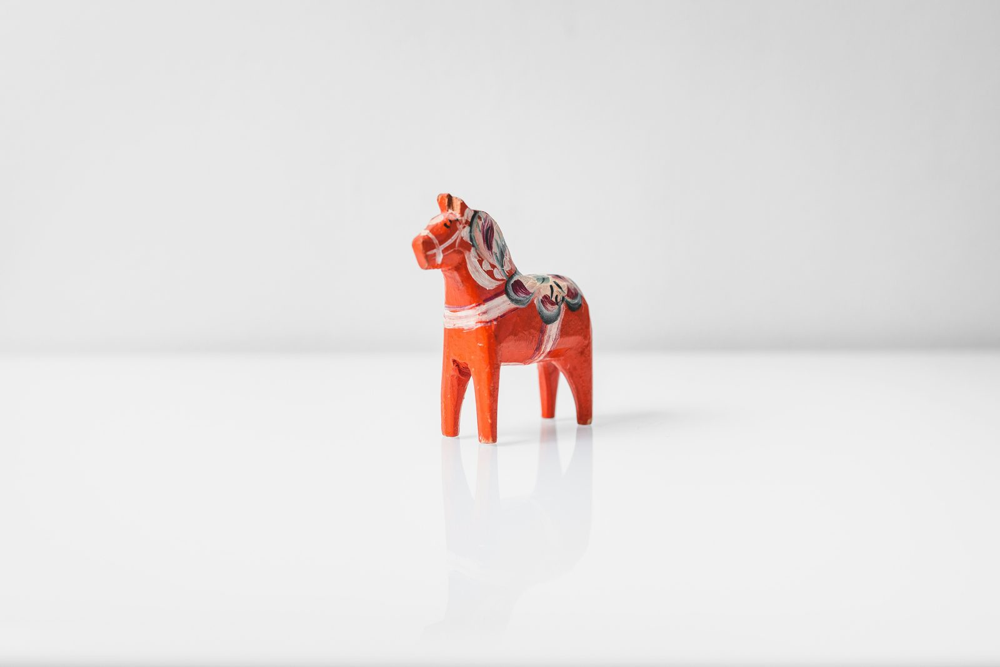
È il mio cavallo di battaglia
Cosa significa “È il mio cavallo di battaglia”? Significa un punto di forza, una competenza o abilità particolarmente sviluppata e vincente. Questo…
7 settembre 2023
Come la pandemia ha cambiato gli italiani
🌍 The pandemic transformed Italian habits: greener choices, more digital life. 🎯 Obiettivi didattic i Imparare a descrivere cambiamenti nelle…
25 agosto 2023Learn Italian for holiday
Prepare for your Italian adventure with essential phrases, cultural insights, and fast-track learning methods. Are you gearing up for an…
12 agosto 2023The Effectiveness of Learning with a Private Tutor
Private tutoring provides personalized learning, immediate feedback, and confidence building, enhancing language education for students. In the realm…
8 luglio 2023Is Italian Difficult to Learn? No!
Learning Italian involves embracing culture. Expert tutor offers tailored classes and immersive experiences for fluency. Learning Italian is more…
2 luglio 2023
Comprare casa in Italia da straniero
🧾 How to buy a house in Italy as a foreigner: rights, risks and legal tips. 🎯 Obiettivi didattici Comprendere testi normativi e informativi…
25 maggio 2023
Aprile, mese di pioggia e speranza
🌱 April in Italy is full of changes, weather sayings and popular rituals. 🎯 Obiettivi didattici Comprendere testi descrittivi e culturali con…
25 febbraio 2023
Veelgestelde vragen over Italiaans leren in Amsterdam en online
Waarom kiezen voor privélessen Italiaans? Privélessen zijn volledig afgestemd op jouw niveau, tempo en doelen. Je krijgt maximale spreektijd, directe…
10 ottobre 2022
In bocca al lupo
La frase “in bocca al lupo” è un augurio comune in italiano che si usa per augurare buona fortuna, specialmente in situazioni di difficoltà o…
8 aprile 2021